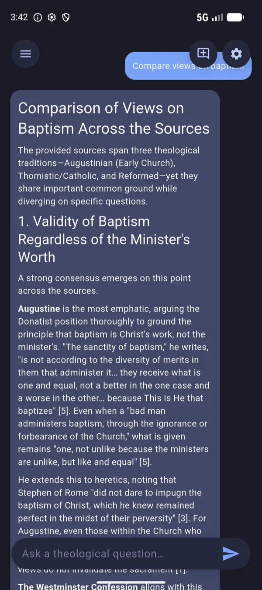

Primary texts, not summaries
Every work is the real thing — the acts of the seven ecumenical councils, not a paragraph about them. Each source records its translator, edition and where it was digitised from.
Offline-first · Private by default
Council is a research library of 650 public-domain Christian works — the creeds and councils, the church fathers, the Reformers, the Puritans — that searches, cross-references and answers questions without ever needing the internet.

Ask a general-purpose chatbot what Athanasius said about the incarnation and it will tell you — fluently, and sometimes from nothing. Council answers only out of texts it actually holds, names them, and lets you open the passage and read around it.
Every work is the real thing — the acts of the seven ecumenical councils, not a paragraph about them. Each source records its translator, edition and where it was digitised from.
The library, the search index and the embedding model all live on your device. Council ships with no AI backend selected — it is a search tool until you choose otherwise.
Exact terminology — homoousion, a quoted phrase, a
proper name — is found by full-text search; meaning is found by
on-device embeddings. The two rankings are fused, so neither blind
spot survives.
Reformed, Baptist, Anabaptist, Quaker, Lutheran, Anglican, Methodist, Catholic, Eastern Orthodox, Oriental Orthodox, the early church and the ecumenical councils — so a question about baptism can be answered by all of them at once.
Tap any passage to highlight it in one of several colours, write a note against it, bookmark it, or ask a question about that passage specifically without losing your place.
The King James Bible is built in. Everything else arrives as a collection you choose — from 8.9 MB of creeds and confessions up to the complete fathers.
Real screens from the app, running the real library.
Council installs with the King James Version complete — 1,189 chapters — and stays useful before a single download. Collections overlap freely, and no work is ever downloaded twice however many collections it belongs to.
| Collection | Works | Download |
|---|---|---|
| Creeds & Confessions | 53 | 8.9 MB |
| Eastern Orthodox | 74 | 11.8 MB |
| Augustine of Hippo | 48 | 12.9 MB |
| John Owen | 31 | 13.6 MB |
| Matthew Henry | 6 | 23.9 MB |
| John Calvin | 48 | 29.4 MB |
| Church Fathers | 402 | 51.0 MB |
| Charles Spurgeon | 74 | 92.3 MB |
Eight of thirty-one collections. See every work in the library →
Council does not ship with a model, does not proxy your questions through anyone's server, and has no account to create.
No AI at all. Council retrieves the passages and shows them to you. Nothing is generated and nothing leaves the device.
A model on your own machine, or another you can reach over your network or VPN. Answers are generated locally and stay there. How to set it up →
Claude, ChatGPT, Gemini or Grok, billed to your own account and stored in the system keychain. Council states plainly that this is the one option that sends your question off the device. Getting a key →